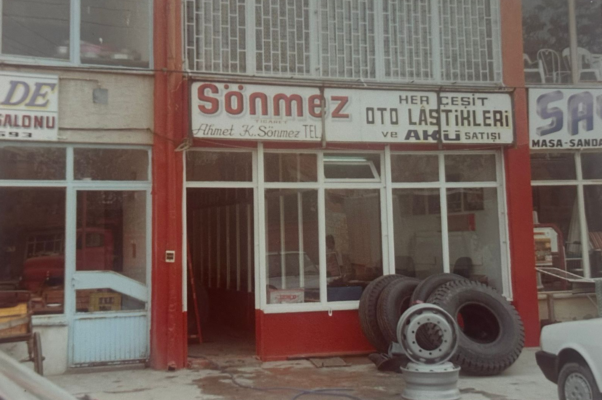
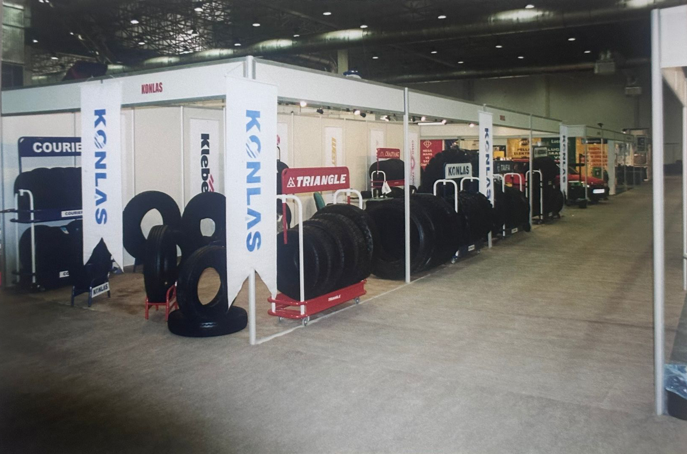
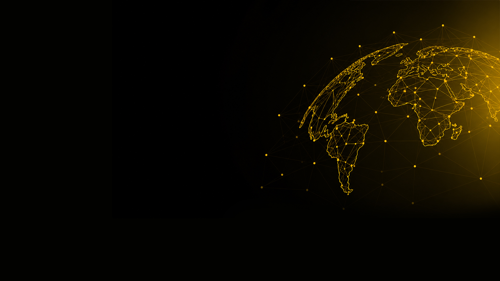
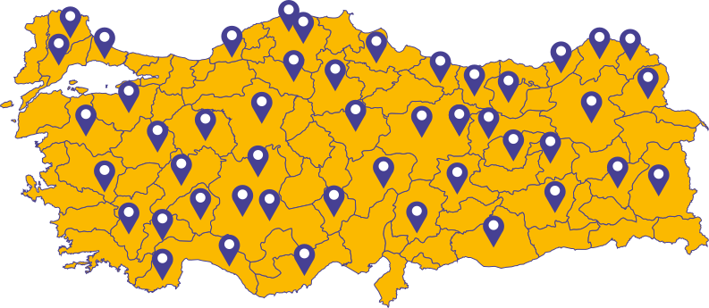
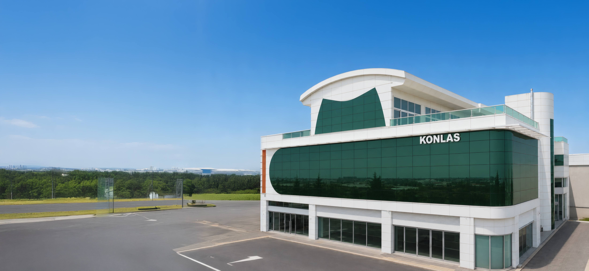

Güveni büyüten köklü güç.
Konlas Otomotiv'in yarım asra yaklaşan ticaret disipliniyle kurulan Lasmax, güçlü marka portföyünü Türkiye genelindeki bayi ağıyla buluşturur.
1979
Konlas ile ilk adım
20 m²'lik bir başlangıçtan, disiplinli ticaret anlayışıyla büyüyen güçlü bir yapıya ulaşıldı.
1997
Global marka açılımı
Uluslararası üreticilerle kurulan ilişkiler, Türkiye pazarına güçlü lastik markaları kazandırdı.
2013
Lasmax bayi sistemi
Konlas deneyimi Lasmax çatısı altında organize bayi gücüne, standart hizmet modeline dönüştü.
Bugün
Türkiye geneli erişim
Stok, lojistik ve bayi koordinasyonuyla doğru ürünün doğru noktaya ulaşması sağlanır.
TARİHÇE
Yolculuğumuz Güçle Şekillendi
1979'dan bu yana lastik sektöründe güven, kalite ve yenilikçi çözümlerle ilerliyoruz. Her kilometrede büyüyen bir başarı hikayesi yazıyoruz.

1979
İlk Adım
Konlas, 1979 yılında küçük bir lastik bayisi olarak faaliyetlerine başladı.

1997
Büyüme Dönemi
Büyüyen ihtiyaçlara büyük çözümler ve daha güçlü operasyon altyapısıyla yanıt verdik.

2013
Yeni Merkez
Modern tesisimize taşınarak hizmet kalitemizi bir üst seviyeye taşıdık.

2018
Global İş Birlikleri
Dünyanın önde gelen lastik markalarının Türkiye iş birlikleriyle marka gücümüzü büyüttük.

2022
Türkiye Genelinde
Bayilik ağımızı genişleterek Türkiye'nin dört bir yanına ulaştık.

Bugün
Geleceğe Yolculuk
Yenilikçi çözümlerle sektöre yön veriyor, büyümeye kararlılıkla devam ediyoruz.
Yarın
Daha Güçlü Yarınlar
Yarınlara güvenle, yenilikle ilerliyoruz. Hedefimiz: daha güçlü yollar ve daha güvenli sürüşler.
45+
Yıl Deneyim
80+
Aktif Bayi Ağı
1M+
Yıllık Sevkiyat
4
Global Marka